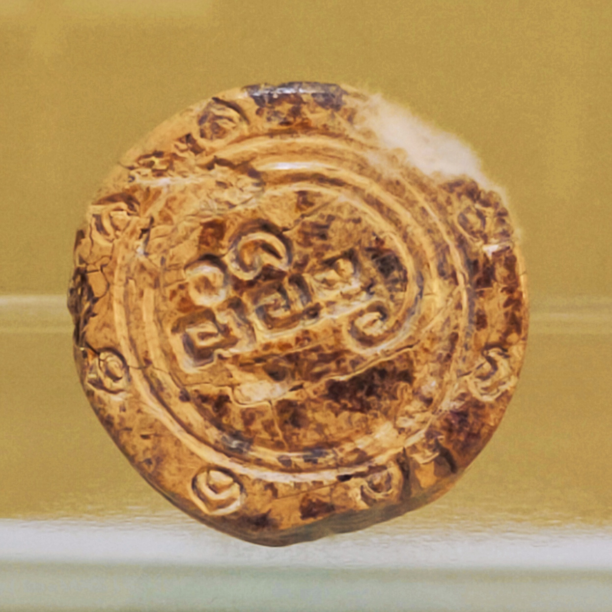

Evaluation of web graphics
Site Evaluated: Department of Information and Communication Technology
Purpose of Graphics on this site:
The purpose of the graphics on this site is to provide a visual representation of the information that is being presented. The graphics are used to show the different types of services that the Department of Information and Communication Technology offers.
Guidelines for effective use of graphics
- Yes- Graphics fit the purpose, organization, and style of the page.
- Yes - Large graphics have been avoided.
- Yes - Graphics help to guide the viewers’ focus to the important content on the page.
- Yes- Overly bright and potentially “obnoxious” images have been avoided.
- Yes - Graphics have not been used for textual content, other than the banner.
- Yes- Alternate text is present for all images.
- Yes- Where text appears in graphics (the banner) there is ample contrast.
Graphic File Types
- gif
- jpg
- jpg
- gif
- png/gif
Web Photo Album
The Butuan Ivory Seal or BIS is an ivory stamp or seal stamp or a privy seal associated with a Rhinoceros Ivory Tusk, dated 9th–12th century, was found in Libertad, Butuan in Agusan del Norte in southern Philippines.
{kind=link}
.jpg) Vincent Willem van Gogh was a Dutch Post-Impressionist artist who emerged as one of the most famous figures in the history of Western art after his death.
Vincent Willem van Gogh was a Dutch Post-Impressionist artist who emerged as one of the most famous figures in the history of Western art after his death.
.jpg) The Starry Night is an oil-on-canvas painting by the Dutch Post-Impressionist painter Vincent van Gogh. Painted in June 1889, it depicts the view from the east-facing window of his asylum room at Saint-Rémy-de-Provence
The Starry Night is an oil-on-canvas painting by the Dutch Post-Impressionist painter Vincent van Gogh. Painted in June 1889, it depicts the view from the east-facing window of his asylum room at Saint-Rémy-de-Provence
.jpg (1).jpg) This hefty Bible had belonged to Van Gogh's father, a Protestant minister. Van Gogh painted it just after his father's death.
This hefty Bible had belonged to Van Gogh's father, a Protestant minister. Van Gogh painted it just after his father's death.